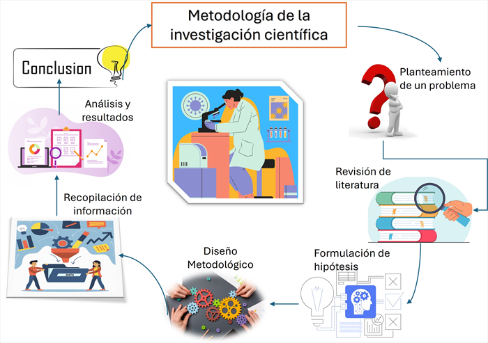

Iniciemos estableciendo todo está orientado a un mayor conocimiento teórico y en su caso con el desarrollo de prácticas fomentarán la adquisición del conocimiento
en donde se aborden problemas que pueden ser o no de la sociedad, además de permitir realizar investigaciones en las que no se han concluido por algún investigador o se encuentran en proceso
Por lo que en el transcurso de la historia toda investigación en el ámbito científico viene por lo general de una necesidad del ser humano para que con ello se dé solución a problemas en donde
permita identificar su naturaleza y todo aquello que lo rodea, así con ello ayudar a complementar una necesidad de dicha investigación.
Por lo que durante el transcurso de esta unidad es muy importante la lectura que el estudiante vaya realizando ya que los conceptos,
diagramación, videos y multimedia preparados para ustedes les apoyarán para establecer todos los elementos necesarios en sus aprendizajes,
ya que es la base elemental de una investigación científica.
"Toda investigación científica establece el uso de una metodología que ayude a estructurar los pasos que se deben de seguir para establecer el objeto de estudio y las posibles soluciones al mismo.
con ello es de suma importancia el problema, análisis y conclusiones, en donde se establezca loso enfoques cuantitativos, cualitativo o ambos en donde el diseño y tipo de estudio
permita la búsqueda y concentración de información para su análisis buscando siempre cumplir los objetivos, hipótesis de la investigación y resultados" (Hernández Sampieri y Mendoza, 2018).
Aspectos por considerar:
Validez y confiabilidad: Es esencial validar que los resultados sustenten datos fiables y precisos en la medición de las variables y el control de sesgos.
Método científico: Es determinante la observación, formulación de hipótesis empírica mediante procedimientos sistemáticos que permitan generar conocimiento nuevo, en donde se expliquen los fenómenos y contribuya al avance de la ciencia en cualquier disciplina.
Eje operativo de estudio Establece la traducción de los planteamientos teóricos en acciones concretas y medibles.
Figura 1.1Metodología de la investigación científica.

Nota. Elaboración propia basada en Fundamentos de investigación. McGraw-Hill 2014. Hernández Sampieri, R.
1.1.1
Introducción a los métodos generales y particulares de la ciencia
El método científico constituye el eje central y a su vez la organización con el fin de visualizar y establecer la hipótesis, análisis y resultados, permitiendo la validez y confiabilidad de dicha investigación.
"La ciencia utiliza varios métodos sistemáticos para obtener conocimiento objetivo, verificable y fundamentado en evidencia.
Estos métodos constituyen el eje central de la investigación científica, ya que orientan la forma en que se observa la realidad, se formulan explicaciones y
se validan los resultados obtenidos. En este contexto, los métodos científicos se clasifican generalmente en métodos generales y métodos particulares,
de acuerdo con su nivel de aplicación y especificidad disciplinar" (Hernández Sampieri y Mendoza, 2018).
1.1.2
Método científico; experimental; clínico; epidemiológico; sociológico y estadístico
1. Método científico
Es una forma de organizar bajo procesos sistematizados y ordenado que genera conocimiento y a su vez sea viable bajo el fundamento de la observación en donde se establezcan preguntas, la elaboración de hipótesis y la comprobación empírica de estas. Todo
esto tiene como objetivo explicar los fenómenos de la realidad de forma: objetiva, racional y verificable, apoyándose en procedimientos lógicos y evidencias observables.
Debido a la organización del método científico y la secuencia de pasos permite la interrelación con los demás objetos de estudio, donde se encuentra la observación del objeto de estudio, problema a abordar, hipótesis, b´
búsqueda de información, revisión de la información y conclusiones. Las etapas ayudan al estudio del fenómeno a observar y reproducible, garantizando el rigor metodológico del estudio (Hernández-Sampieri et al., 2014).
Características del método científico se establecen en su objetivo, en el cual debe ser sistemático y verificable, debido a que es muy importante
los resultados obtenidos, aunado a ello pueden ser la base para trabajos futuros de otras personas que deseen hacer o dar continuidad a este trabajo de investigación.
Esta característica fortalece la validez del conocimiento científico, empírico o intuitivo. Asimismo, el método científico permite formular y contrastar teorías, ya que a partir de los
resultados obtenidos se pueden aceptar, modificar o rechazar hipótesis, contribuyendo al avance del conocimiento en distintas áreas del saber. De esta manera, el método científico no solo explica fenómenos, sino que también impulsa la construcción y evolución del conocimiento científico.
Por lo que dicho método es la de toda investigación científica, teniendo en consideración el enfoque metodológico utilizado, su aplicación rigurosa garantiza que los estudios se desarrollen con criterios de validez, confiabilidad y ética.
2. Método experimental
Es un enfoque de investigación usa a las variables independientes, con el fin de observar y analizar su efecto y resultado obtenido, esto permite observar su comportamiento en el proceso. Esto
es de mucha importancia en un alto grado de rigor científico, ya que la revisión al a los grupos experimentales y de control, ayuda a tener el mínimo problemas de resultaos con relación a otros casos.
Derivado a que se pueden presentar hipótesis nulas y alternas, teniendo que aplicar pruebas estadísticas. Método experimental usa instrumentos de medición y procedimientos estandarizados para garantizar los datos de resultados.
Es por ello que el método experimental se utiliza en diferentes espacios de la salud, educación y sociedad, ya que ayuda a las intervenciones o programas. No obstante, su aplicación debe considerar criterios éticos, especialmente cuando involucra seres humanos,
asegurando el respeto a la integridad y derechos de los participantes.
3. Método clínico
Se utiliza en la salud para identificar, analizar, plantear posibles soluciones a los problemas de la salud–enfermedad.
su principal función es la de mirar con rigurosamente el objeto de estudio para que con ello se pueda hacer la identificación de datos y estudios clínicos,
con el objetivo de establecer diagnósticos, tratamientos y pronósticos adecuados en su aplicación, el método clínico sigue una secuencia lógica de etapas, que incluye la anamnesis, la exploración física, la formulación de hipótesis diagnósticas, la solicitud e interpretación de estudios complementarios y la confirmación del diagnóstico.
Esta secuencia permite integrar datos subjetivos y objetivos para comprender de manera integral la condición del paciente (Hulley et al., 2013).
Hulley et al. (2013) señalan que el método clínico se apoya en el razonamiento clínico, el cual consiste en un proceso cognitivo mediante el cual el profesional de la salud analiza la información disponible, compara hallazgos con el conocimiento previo y selecciona la mejor alternativa diagnóstica o terapéutica.
Asimismo, el método clínico incorpora exámenes de laboratorio y datos clínicos que faciliten el dato observados para la integración de la experiencia
clínica del profesional con los mejores resultados de la investigación científica disponible.
La aplicación del método clínico debe regirse por principios éticos, respeto a los datos del paciente y la búsqueda del mayor beneficio con el menor riesgo posible. El apego a estos principios fortalece la relación médico-paciente y garantiza una práctica clínica responsable y humanizada.
Figura 1.2Método científico, experimental y clínicoNota. Elaboración propia basada en Fundamentos de investigación. McGraw-Hill 2014. Hernández Sampieri, R.
4. Método epidemiológico
Se utiliza para estudiar problemas relacionados con la salud de las personas, su propósito fundamental parte de la identificar patrones, causas y factores de riesgo que permitan comprender el
comportamiento de los problemas de salud y orientar acciones que prevean los casos que se presenten.
El método epidemiológico sigue etapas sistemáticas, que incluyen la observación del problema de salud, hipótesis, la medición de la frecuencia mediante indicadores como incidencia y
prevalencia, y el análisis de asociaciones entre variables, por lo que este proceso permite generar evidencia científica.
El método epidemiológico se respalda específicamente en la estructura de la investigación observacionales y experimentales, una parte importante en la cual el método pone mayor énfasis en la frecuencia con las
que se presentan las enfermedades en los pacientes esto permite aplicar medidas de prevención y en su caso solución al problema.
5. Método sociológico
Es un enfoque científico orientado al estudio sistemático de los fenómenos sociales, organizaciones y comportamiento colectivo. Se orienta a establecer la forma que interactúan los individuos con la sociedad y cómo estas interacciones generan patrones,
normas y dinámicas sociales observables, el método sociológico se apoya tanto en enfoques cuantitativos como cualitativos, utilizando técnicas como encuestas, entrevistas, observación participante, análisis documental y estudios de caso. La selección de estas técnicas depende del problema de investigación y la magnitud del fenómeno analizar.
Hernández-Sampieri et al. (2018), establece que método sociológico permite identificar relaciones entre variables sociales, como clase social, educación, cultura, género o contexto económico, contribuyendo a explicar desigualdades, comportamientos colectivos y cambio social.
Figura 1.3Método epidemiológico y sociológicoNota. Elaboración propia basada en Fundamentos de investigación. McGraw-Hill 2014. Hernández Sampieri R.
6. Método estadístico
Se utiliza como una estructura de control para analizar e interpretar información cuantitativa para describir fenómenos en los cuales se identifican patrones y relaciones entre variables. Este método organiza los datos numéricos en información significativa que respalde la toma de decisiones y ayude a comprobar la hipótesis planteada.
Una de las funciones que presenta es la transformación objetiva de los datos de una investigación, por lo que permite desarrollar diseños de estudio eficaces para el análisis de la información.
Figura 1.4Método estadísticoNota. Elaboración propia basada en Fundamentos de investigación. McGraw-Hill 2014. Hernández Sampieri, R.
Actividad de Aprendizaje 1.1 Aspectos Básicos
Pon a prueba tus conocimientos sobre la metodología de la investigación científica.